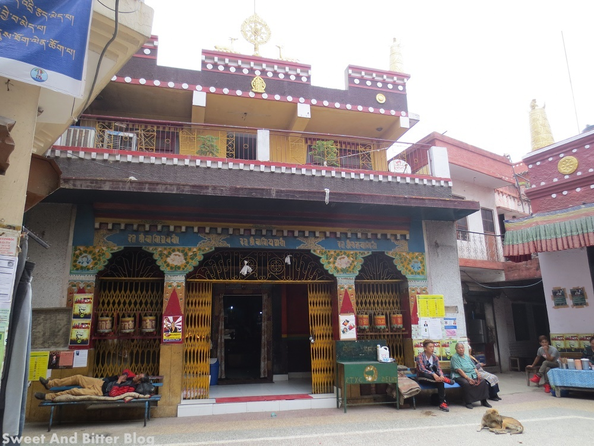

Delhi is a city full of hidden gems and unique experiences. We invite you to discover the best places to visit in Delhi with our expert recommendations.
Majnu ka Tila is a popular tourist spot located in the North Delhi district. Visitors can reach the spot through the nearest metro station, which is Vidhan Sabha Metro Station on the Yellow Line. Alternatively, one can also reach the location through buses or taxis. The tourist spot does not require any tickets for entry and is open to visitors throughout the day. However, visitors are advised to check the hours of operation for individual shops and restaurants in the area. Majnu ka Tila is known for its Tibetan culture and cuisine, with many restaurants serving traditional Tibetan dishes. Visitors can also explore nearby attractions, such as the Yamuna River and the nearby Gurudwara. It is recommended to wear comfortable clothing and shoes, especially if planning to explore the area on foot. As a cultural spot, visitors are advised to be respectful of local customs and traditions. There are no specific events or activities taking place at Majnu ka Tila, but visitors can enjoy exploring the area and experiencing the local culture. Photography is allowed, but visitors should be aware of any photography policies in place and respect the privacy of locals.
DELHI TOURIST SPOT INFO
- SPOT NAME NAME : Majnu Ka Tila
- Language : Hindi,Tibetan
- Visiting Time : 10am to 7pm(open all days) 2021
- Address : Majnu ka Tila, New Aruna Nagar Colony, New Delhi, Delhi 110054
- Size : Majnu ka Tila is a small but densely populated area covering about 0.1 square kilometres.
DESCRIPTION
Majnu ka Tila is a colorful Tibetan settlement located in North Delhi, named after Sufi saint Hazrat Baba Lalan Shah. The area boasts vibrant streets, Tibetan markets, and Buddhist temples, including the famous Gompa Monastery. Visitors can enjoy authentic Tibetan cuisine, shop for traditional handicrafts, and immerse themselves in the unique culture. Majnu ka Tila also hosts various cultural events throughout the year, making it a must-visit destination for those looking for a unique cultural experience in Delhi.
Visuals
 Some Useful LinksDownloadable maps
Must-read articles
Deals and discounts